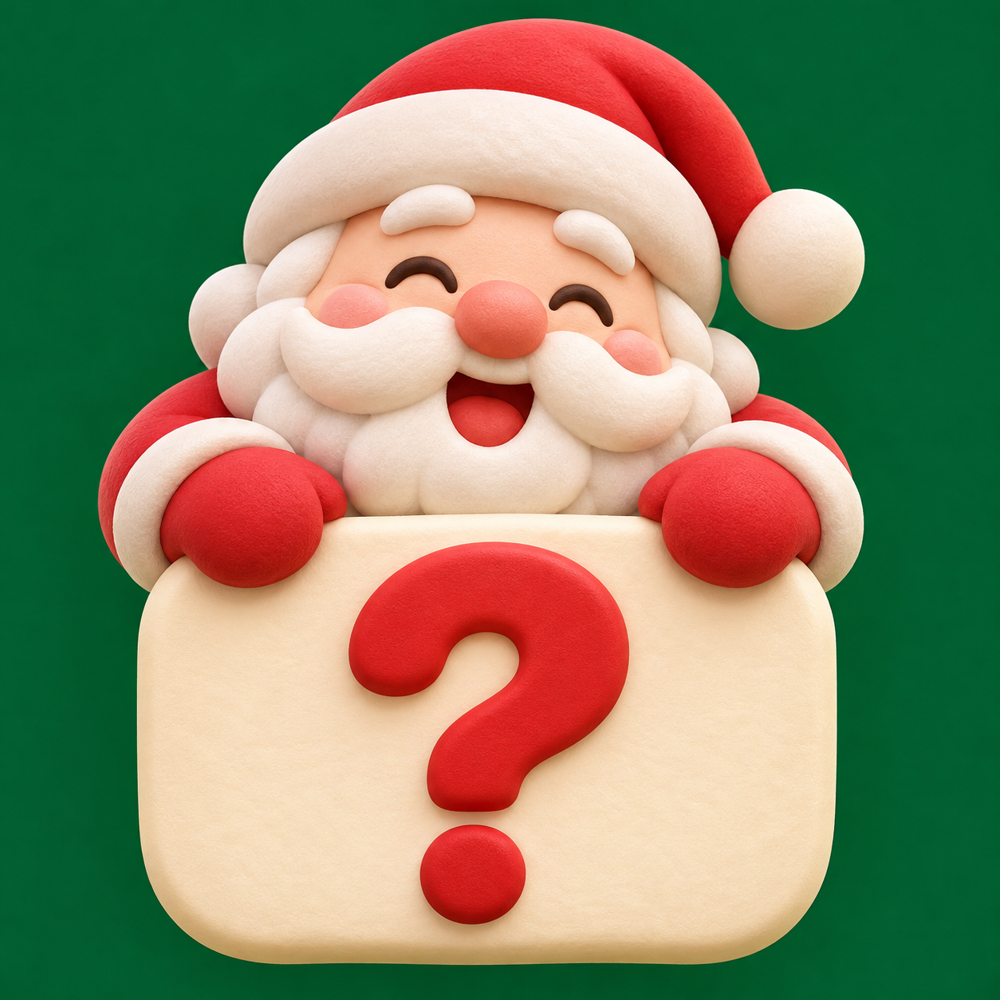
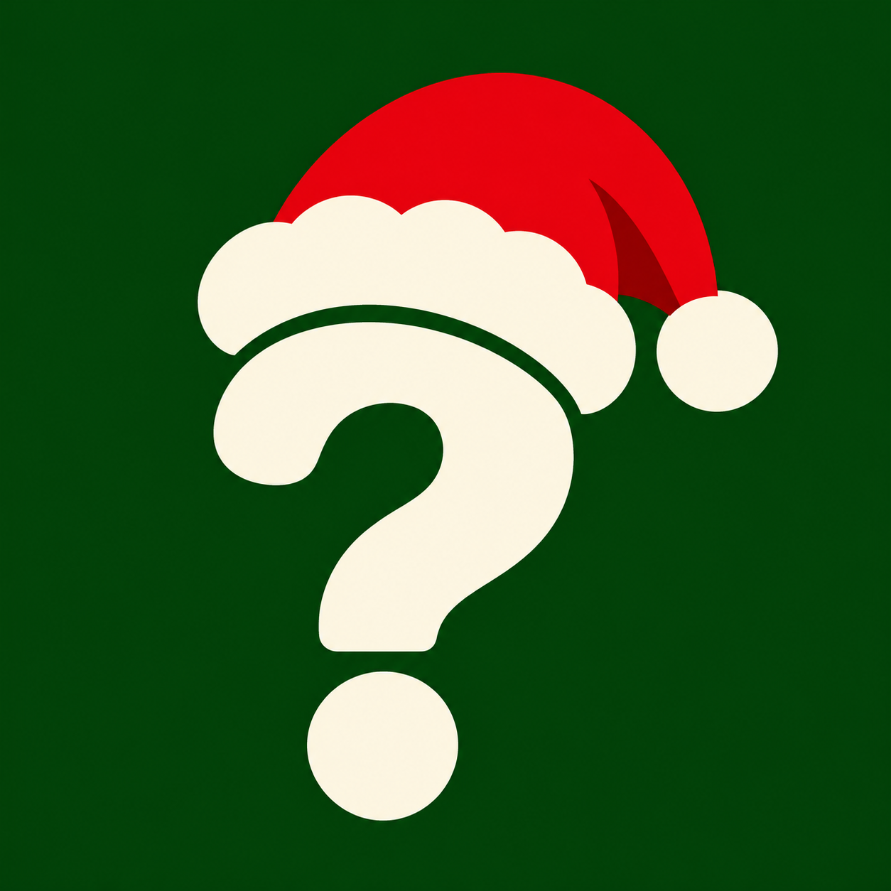
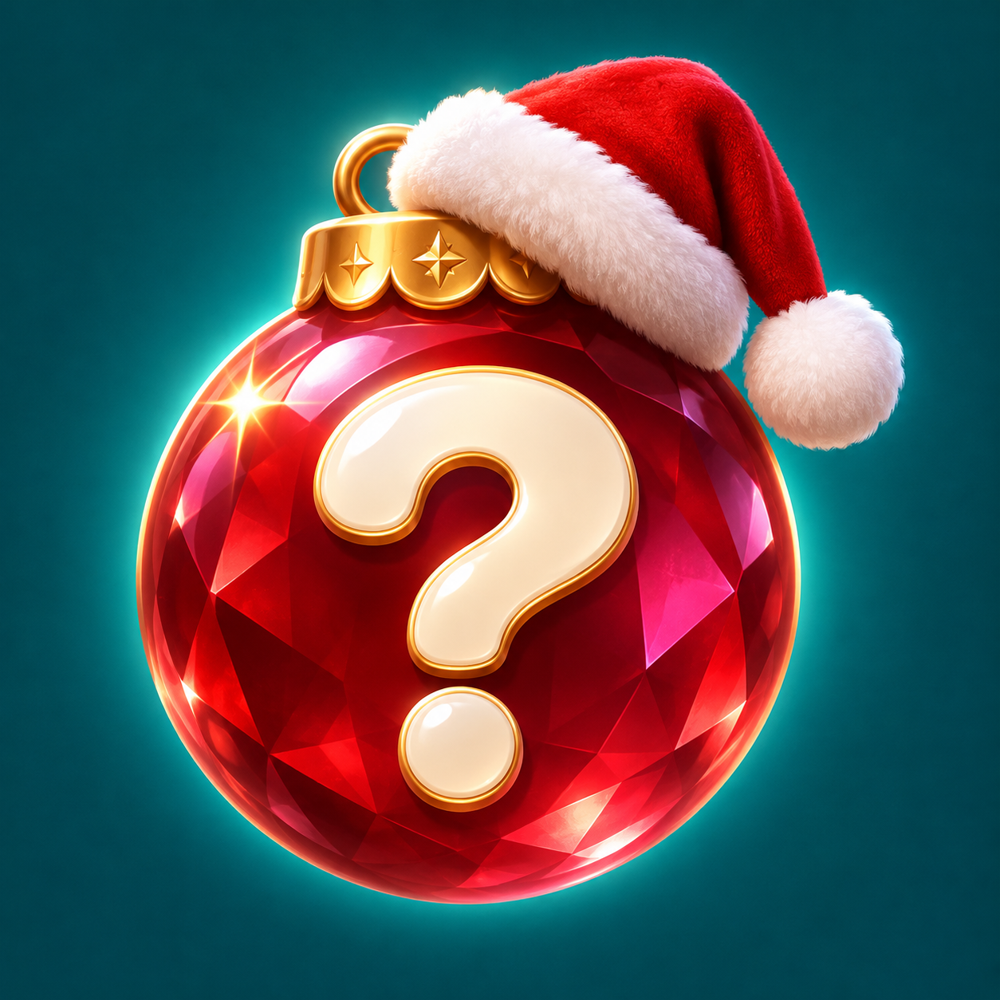
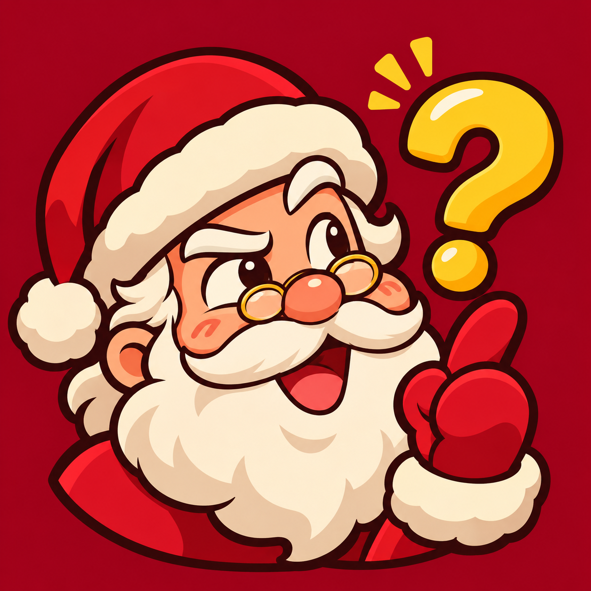

01 · 생각하는 픽셀 산타
기존 픽셀 게임 시안과 이어지는 방향. 고민하는 산타의 표정과 물음표로 퀴즈를 표현합니다.
SANTA QUIZ / APP ICON EXPLORATIONS
산타 테마와 퀴즈의 인상을 함께 담은 여섯 가지 방향입니다.
큰 이미지와 작은 크기를 비교해 보세요. 이미지를 누르면 정사각형 원본이 열립니다.
기존 픽셀 게임 시안과 이어지는 방향. 고민하는 산타의 표정과 물음표로 퀴즈를 표현합니다.

클레이 질감의 친근한 산타와 커다란 문제 카드. 따뜻하고 쉽게 다가가는 학습 앱의 인상입니다.

산타와 퀴즈를 하나의 단순한 상징으로 결합합니다. 작은 크기에서도 형태와 대비가 또렷한 방향입니다.
따뜻한 그림책 질감과 안경 쓴 산타. 책 속 문제를 함께 풀어 가는 차분한 학습 분위기입니다.

물음표가 새겨진 붉은 유리 장식에 산타 모자를 더했습니다. 앱의 장식 수집과 보상 경험을 강조합니다.

굵은 윤곽선과 생동감 있는 표정. 게임처럼 즐겁게 문제를 푸는 활기찬 캐릭터 중심 방향입니다.